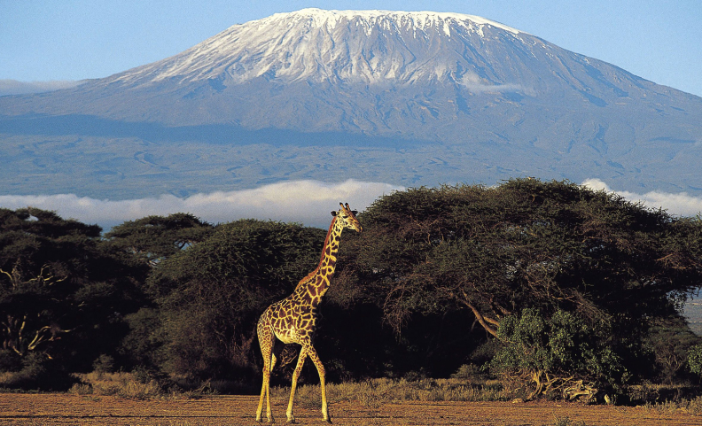
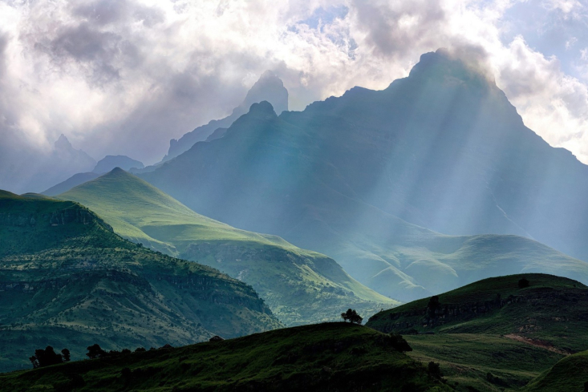
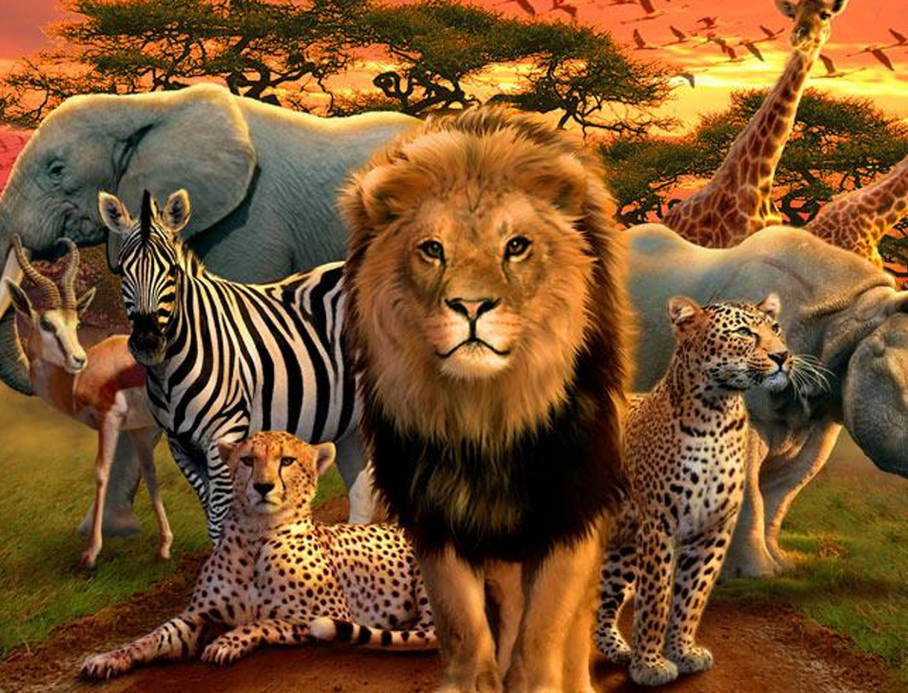
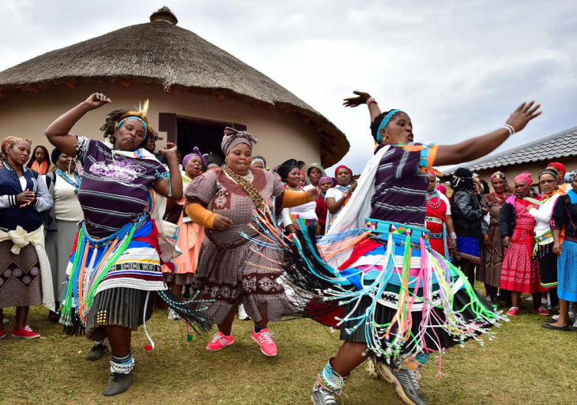
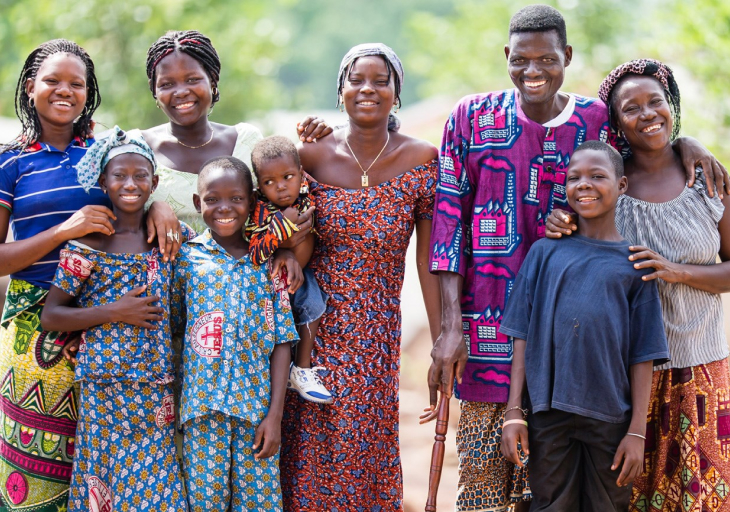

Address
244 Jackson St San Francisco
Phone
+1 (489) 715 - 89 - 67
info@tourAfrica.com
Victoria Falls is very hectic and raging. It can be seen and heard from a great distance. During a period of special activity, water clouds of the waterfall can be seen from a distance of 25 kilometers. The waterfall looks different during rains and in drought. If the Zambezi is overcrowded, then the waterfall drops off with huge streams of water. It looks very impressive. It is for this reason that it is better to come to to admire the waterfall in the spring. At this time, the river is overflowing with water. Severe droughts also occur, in which the water flow becomes insignificant. The attraction is located on the border of Zambia and Zimbabwe. The waterfall has a natural swimming pool where tourists swim. You can swim when the water level drops.
Kilimanjaro is the highest mountain in Africa and one of the Seven Summits (the highest mountains on all continents). In 1889, the first successful ascent took place, then it took about six weeks. Today the average climber can complete it in five or six days.
Egyptian pyramids have always hid various secrets and attracted tourists with their secrets. Thus, over 5 thousand people visit the Egyptian pyramids per year. There are legends about the construction methods of the Egyptian pyramids. Some say that the pyramids were built by aliens, others that the stone blocks for construction were carried by powerful magicians with the help of crystals. The largest of all the Egyptian pyramids is considered the Pyramid of Cheops. Its height reaches 146 meters. The most ancient is the pyramid of Djoser. In ancient Egypt, archaeologists have discovered over 140 pyramids. They are all filled with secrets and riddles, and each of them has its own secrets.
Fans of ecotourism and natural beauty have no doubts in which part of Africa the Drakensberg Mountains are located, literally all travelers dream of visiting this place. Most of the mountains of the system are included in the Drakensberg park of the same name, deservedly under the protection of UNESCO. The landscapes and natural objects of this area are famous for their uniqueness and picturesqueness. Visiting the Drakensberg Mountains requires certain expenses and organization, but choosing this destination as part of an excursion or a full-fledged vacation guarantees a fabulous and unforgettable experience.
Since prehistoric times, Africa has the largest number of megafauna representatives. Nowhere in the world is there such an abundance of large animals as in the African savannah: elephants, hippos, lions, giraffes, leopards, cheetahs, warthogs, antelopes (cannes, wildebeest, gazelles), kaffir buffaloes, black and white rhinos, zebras, monkeys, hyenas , porcupines. Savannas and semi-deserts are also home to many small mammals such as rodents, lagomorphs, meerkats and many others.
Majestic Africa is fraught with many unexpected and interesting discoveries for the traveler. So what to do in Africa besides safari?
A peaceful safari with a camera also gives the brightest emotions, this is a pleasure available to any tourist! It is carried out in protected areas where hunting is prohibited, and therefore the animals are allowed very close to themselves. The drama of the struggle for existence between the predator and its prey, the tenderness of the animals for their babies, the romance of true love that happens in the kingdom of animals - all this happens before your eyes, just a few steps away.
Egypt is a fabulous land of pyramids, mummies, temples, pharaohs. The sights of Egypt beckon into the depths of the centuries, forcing you to plunge into the history of antiquity and imbued with the spirit of those times. Modernity and antiquity wonderfully coexist here with each other, giving this land a bewitching magical look. The country is distinguished by its originality, loyalty to traditions and a characteristic oriental flavor. The dry and hot climate allows you to come here on vacation in any season: even in the winter months, the sea water temperature is above 20 degrees. Guests arriving in Egypt for the first time naturally ask themselves what to see in Egypt in the first place?
South Africa is the place to go in search of the big wave. A huge number of surf camps, excellent beaches, spots of varying difficulty levels, great instructors make a trip to this country a surfer's dream. In addition, water extreme here can be combined with stunning excursions, African safari, gastro travel through the wine estates of the Republic of South Africa. Such types of water activities as kiting and windsurfing are also developed.
The diving capital of Africa is Durban, known for warm waters, coral reefs and massive migrations of whale sharks in the summer. Shark swimming is especially popular at Shelley Beach in late August. Visiting Kenya, you can combine diving with spear fishing. Groupers, dolphins and Napoleon wrasses are found here. From January to March, the visibility exceeds 20 m. Madagascar is famous for the abundance of clown fish, octopus and parrot fish, visibility there from 30 m.On the island of Mauritius, visibility from September to March is about 20 m.At this time, squirrel fish, white-finned, tiger and gray sharks swim up to the coast, and also triggerfish. Diving in Africa is possible throughout the year, the air temperature in most regions does not drop below + 32 ° C. In the southern part of the continent, the water temperature from October to April varies from +20 to + 29 ° С. Visibility depends on the weather and can range from 12 to 40 meters. The depth in different places varies from 12 to 35 m.
The beaches of South Africa are recognized by many experts as the best in the world. They are ideal both for complete relaxation in the sun and for water sports: surfing, windsurfing, diving, snorkeling. Here you can relax by the sea with penguins, swim with dolphins, watch whales playing in the ocean. Beach vacation in South Africa is different in that, even if you come to rest at the sea (or rather the ocean), you have the opportunity at any time to interrupt the annoying inactivity and rush towards adventure! Many beaches in South Africa have been awarded an international award - the Blue Flag award, which testifies to the high level of ecological cleanliness of water and sand, as well as swimming safety and comfort.
Africa is an amazing continent for many reasons, one of which is considered to be a distinctive and diverse culture that varies from place to place. Therefore, tourism in Africa attracts people from all over the planet who want to learn something new and exciting. All sorts of cultures have united on the African continent, since this place is considered the ancestral home of all mankind. In addition, the countries of Africa have long been colonies of great empires and European states that have definitely left their cultural heritage. This explains the amazing symbiosis that exists today.

The true culture of Africa is based on family traditions, which are indisputably observed and respected, as well as on the characteristics of numerous ethnic groups. Also, all local art is imbued with their religious beliefs and social characteristics. All African art is concentrated around the human figure, while the images are often abstract than real. Studying the cultural news of Africa, you will notice that the artists prefer to work with three-dimensional space (sculpture), rather than two-dimensional. In addition, a feature of African artworks is that they usually have distorted proportions. Africans are striving to destroy the line between art and real life, using certain objects created by masters in everyday life and traditional rituals. Looking at goods from Africa *, you will notice that among them there are a large number of masks and figurines, since African plastic has a strong place in the local culture. These items are used in various rituals, rituals to scare away evil spirits or to preserve the soul of the deceased. African music has long roots, but the use of various drums and the extraction of unusual sounds is constant. These sounds are usually accompanied by dances, which were previously performed during all kinds of rituals and hunting, so the traditional movements are sharp and accompanied by battle cries.

Contemporary African culture Many tourists come to the black continent just to touch the culture that has been preserved there for centuries. It is her originality and uniqueness that attracts a modern person. Of course, now African music can be supplemented by new musical instruments and arrangements, but it only benefits from this, because ethnic motives are preserved and embellished. Even African plasticity was inherited by the Cubists in the last century, thanks to which amazing motifs can be observed in the paintings of European masters. The film industry is still poorly represented in Africa, only Algeria and Egypt can boast of some developments. But all those creations that exist (cinema and literature), their main goal is to create a different, better image of Africa for the whole world.